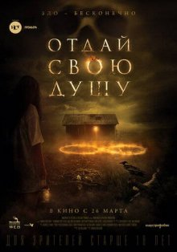

Description: Mary is an ordinary teenage girl. She lost her parents, and distant relatives took custody of her. They are also going through a very difficult time, as the head of the family became a boncrot. Together with his wife and new daughter, he moves to an old abandoned farm, inherited from his father. Lazarus is still working here, who helped the deceased owner and looked after him before his death. Mary immediately finds a common language with him, and they become good friends. From him, the girl learns about an old legend, according to which an incredible force that can raise the dead dwells in this place. The desire to return the dead parents does not give the heroine peace ...